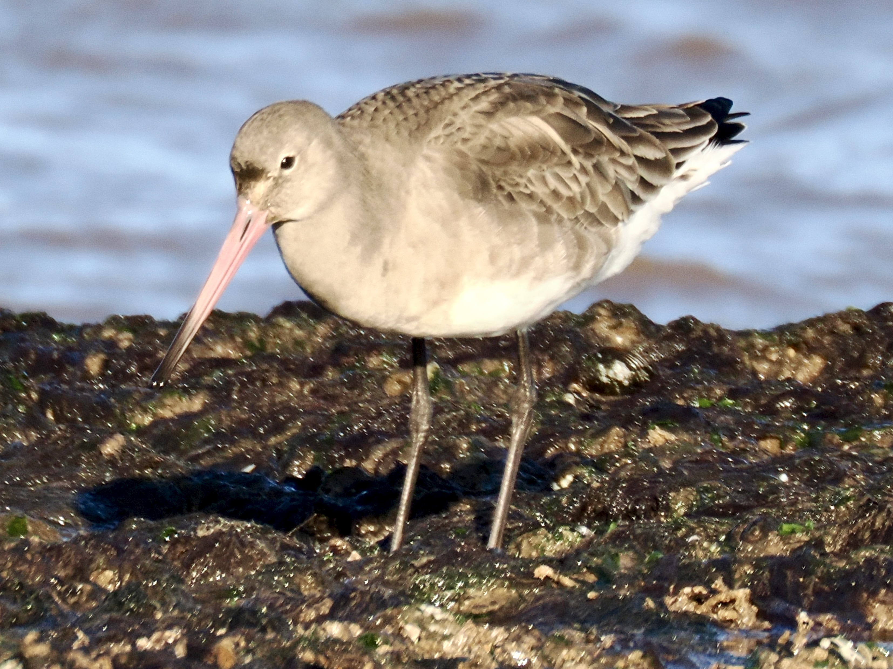
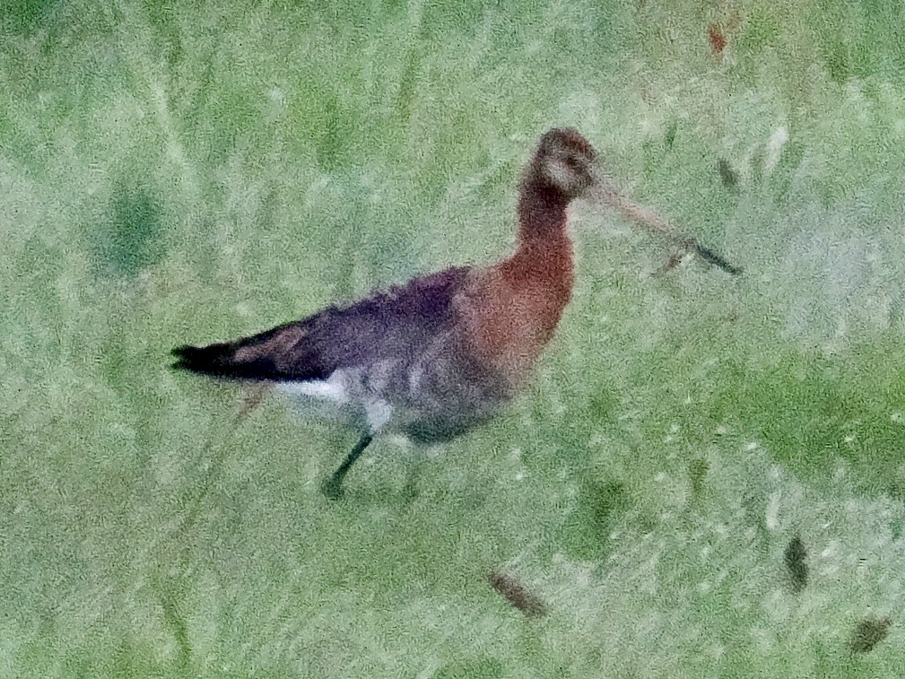

Black-Tailed Godwit
Limosa limosa
Order: Charadriiformes
Family: Scolopacidae

A godwit with a long, straight bill and black tail. Bill is pink and black-tipped. Longer legs than Bar-Tailed Godwit. In breeding plumage, upperparts are generally grey-brown; wing feathers have a less contrasty pale edge.

In breeding plumage, has a rufous head and breast and black-barred belly.